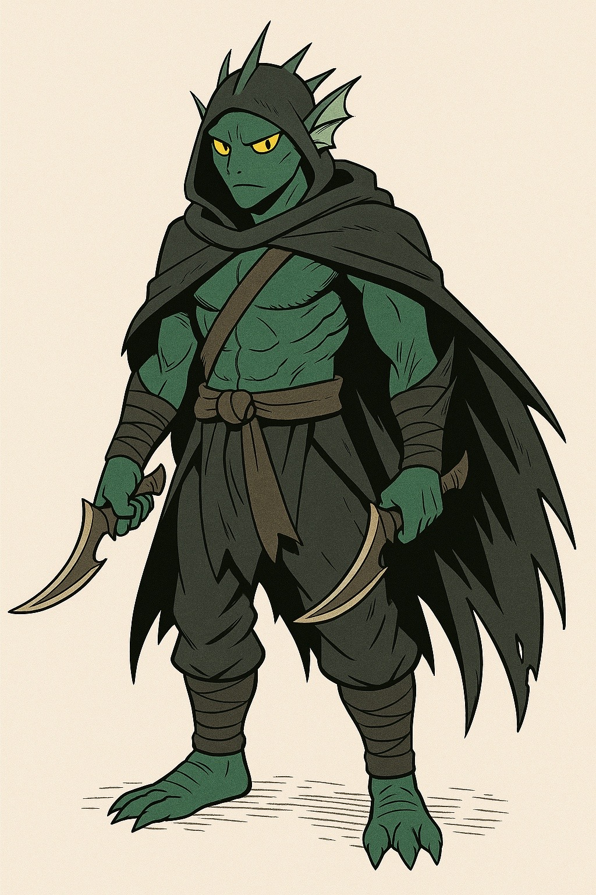

Thalon the Shadowblade — Murkfolk Enforcer
Age / Race / Role: ??? (appears 16), Murkfolk, Shadow Operative
Affinities & Energy Types: Shadow, Water, Celestial
Threat Tier: S
Core Stats (0–10)
- Power: 9
- Speed: 8.5
- Technique: 8.5
- Durability: 9
- Energy Control: 9.5
- Intellect: 8
Signature Abilities
- Shadow Slip: Vanishes into surfaces and reappears unpredictably.
- Tidal Slice: Channeling water blades into martial strikes.
- Surge Form – Abyssal Stalker: Full Murkfolk energy unleash, eyes glow gold.
Personality
Stoic, stealthy, observant. Speaks little but fights with deadly precision.
Faction or Allegiances: Tidelore Murkfolk, Energetic Guardians (provisional)
First Appearance: Episode 4 / Chapter 3